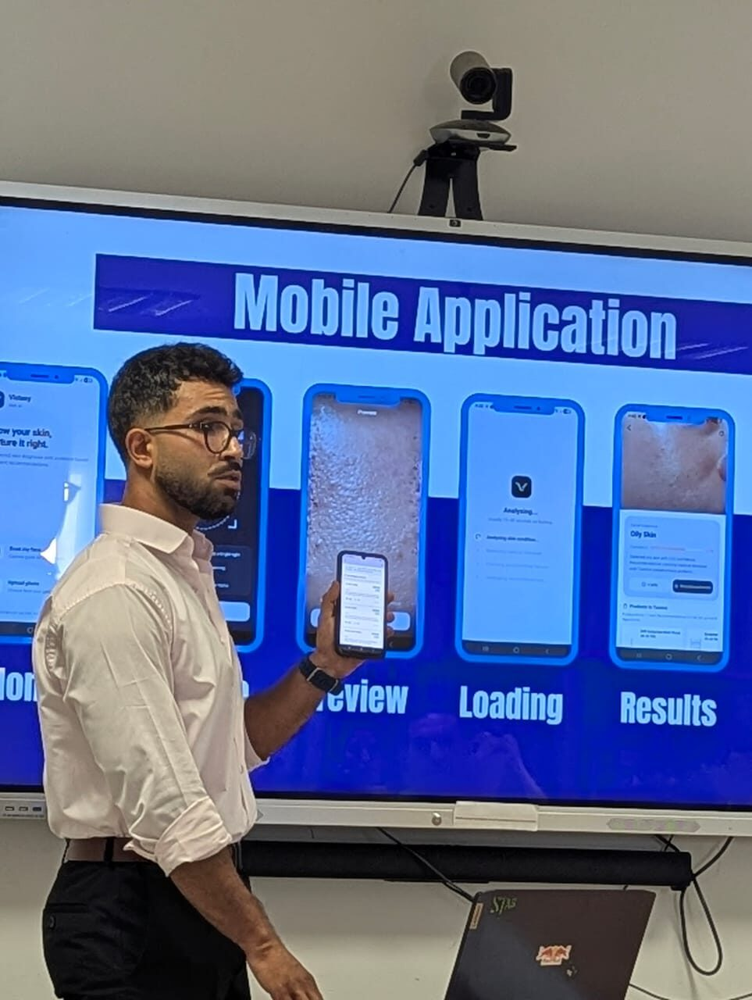

End-of-Studies Master Project · Feb – May 2026
Auréa
AI Skin Analysis Mobile Application — end-to-end AI mobile product and analytics capstone
Auréa pairs a trained computer-vision model with a mobile product experience: a user photographs their skin, the app classifies the concern, and a retrieval-augmented recommendation layer explains what it found and what to do next — grounded in real medical literature rather than a static rules table.
The project spans the full stack of the work I want to keep doing: defining the KPIs and delivery plan with stakeholders, building the model, and shipping the product it lives inside.
Live Demo

95.7%
Test Accuracy
13.7K
Training Images
7
Skin Classes
13
API / Android Tests Passed
Build Log
What I Built
- Trained EfficientNetB0 on 13,700 images across seven classes, achieving 95.7% test accuracy.
- Built a Flutter/FastAPI pipeline integrating CNN inference, medical RAG, weather context, products, and doctors.
- Containerised and deployed the system on Railway; passed 13 API and Android tests.